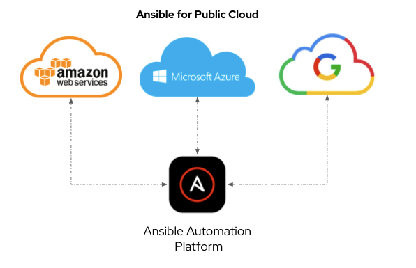

How to Migrate your Ansible Playbooks to Support AWS boto3
How to Migrate your Ansible Playbooks to Support AWS boto3
Red Hat Ansible Automation Platform is known for automating Linux, Windows and networking infrastructure. While both the community version of Ansible and our enterprise offering, Red Hat Ansible Automation Platform, are prominently known for configuration management, this is just a small piece of what you can really achieve with Ansible's automation. There are many other use-cases that Ansible Automation Platform is great at automating, such as your AWS, Azure or Google public cloud

Ansible Automation Platform can automate deployments, migrations and operational tasks for your public cloud. This is extremely powerful because you can orchestrate your entire infrastructure workflow, from cloud deployment, to instance configuration, to retirement, rather than requiring a point tool for each separate use-case. This also allows IT administrators to concentrate on automating business outcomes rather than individual technology silos.
Specifically for this blog, I wanted to cover converting your Ansible Playbooks for provisioning an instance on AWS from the unsupported ec2 module to the fully supported ec2_instance module. Amazon has deprecated their Software Development Kit (SDK) Boto in favor of the newer fully supported SDK Boto3. Alina Buzachis announced "What's New: The Ansible AWS Collection 2.0 Release" back in October 2021, which includes full support in our Red Hat Ansible Certified Content Collection for the amazon.aws.ec2_instance module, which uses Python 3 and Boto3.
The supported ec2_instance module has existed for some time, but I had not adopted it for my use-case yet because we needed one last feature for parity with the older ec2 module. Specifically, for demos and workshops, I required the exact_count parameter. This allows me to boot as many identical instances as I specify. For example, if I specify exact_count: 50, it will spin up 50 identical Red Hat Enterprise Linux 8 instances.
Using exact_count can save hours of time versus using a loop, and I don't need a massive declarative file to represent my 50 servers; it's just a tweak of a single parameter to make identical copies. Luckily we know that we have parameter, so I started converting all workshops and demos that the technical marketing team uses to Boto3.
Let's look at an older version of a task file from our technical workshops so I can show you how to convert from ec2 to ec2_instance:
--- - name: Create EC2 instances for RHEL8 ec2: assign_public_ip: true key_name: "{{ ec2_name_prefix }}-key" group: "{{ ec2_security_group }}" instance_type: "{{ ec2_info[rhel8].size }}" image: "{{ node_ami_rhel.image_id }}" region: "{{ ec2_region }}" exact_count: "{{ student_total }}" count_tag: Workshop_node1": "{{ ec2_name_prefix }}-node1" instance_tags: Workshop_node1": "{{ ec2_name_prefix }}-node1" Workshop: "{{ ec2_name_prefix }}" Workshop_type: "{{ workshop_type }}" wait: "{{ ec2_wait }}" vpc_subnet_id: "{{ ec2_vpc_subnet_id }}" volumes: - device_name: /dev/sda1 volume_type: gp2 volume_size: "{{ ec2_info[control_type].disk_space }}" delete_on_termination: true register: control_output
For booting an instance into AWS, there are only six required parameters. You need to specify a key (i.e. the SSH key to access the image), security group (virtual firewall for your ec2 instances), instance_type (e.g. t2.medium), a region (i.e. us-east-1), image (e.g. an AMI for RHEL8) and a network interface or VPC subnet id (vpc_subnet_id).
The rest of the parameters in my task above are for:
- tweaking the instance
- adding a public IP address, increasing storage
- changing the module behavior
- wait refers to waiting for the instance to reach running state,
- exact_count refers to provisioning multiple instances in parallel
- tagging, which is just adding key value tags to the instance so we can filter on them in subsequent automation, or just sort easily in the AWS web console.
To convert this to ec2_instance, there are only a few small tweaks you need to make!
| ec2: | ec2_instance: |
|---|---|
|
|
|
|
|
|
|
|
|
|
|
|
The entire modified task looks like the following:
- name: Create EC2 instances for node1 ec2_instance: key_name: "{{ ec2_name_prefix }}-key" security_group: "{{ ec2_security_group }}" instance_type: "{{ ec2_info[rhel].size }}" image_id: "{{ node_ami_rhel.image_id }}" region: "{{ ec2_region }}" exact_count: "{{ student_total }}" network: assign_public_ip: true filters: "tag:Workshop_node1": "{{ ec2_name_prefix }}-node1" tags: Workshop_node1: "{{ ec2_name_prefix }}-node1" Workshop: "{{ ec2_name_prefix }}" uuid: "{{ ec2_name_prefix }}" guid: "{{ ec2_name_prefix }}" Workshop_type: "{{ workshop_type }}" wait: "{{ ec2_wait }}" vpc_subnet_id: "{{ ec2_vpc_subnet_id }}" volumes: - device_name: /dev/sda1 ebs: volume_type: gp2 volume_size: "{{ ec2_info[rhel].disk_space }}" delete_on_termination: true
While the task may look long, realize that optional tags are taking up seven lines... which is OK, and I am displaying many default values. Remember that there is no additional cost to add tags to cloud resources, and they help with subsequent automation and filtering. I once heard a colleague exclaim that you can never have too many tags!
Looking at the task above, you will see that anything with the tag Workshop_node1: "-node1" will be used to verify whether existing instances match. It will make sure that exact_count of instances exist with the tag Workshop_node1. This can also be used in subsequent automation to filter and retrieve just the instances you want.
- name: grab instance ids to tag rtr1 ec2_instance_info: region: "{{ ec2_region }}" filters: "tag:Workshop_node1": "{{ ec2_name_prefix }}-node1" register: node1_output
This will retrieve all instances with their common tag. You will also probably require unique tags for each instance. In that case, I recommend the ec2_tag module, where looping is less time intensive (versus looping with the ec2_instance module):
- name: Ensure tags are present for node1 ec2_tag: region: "{{ ec2_region }}" resource: "{{ item.1.instance_id }}" state: present tags: Name: "{{ ec2_name_prefix }}-student{{ item.0 + 1 }}-node1" Index: "{{ item[0] }}" Student: "student{{ item.0 + 1 }}" launch_time: "{{ item.1.launch_time }}" with_indexed_items: - "{{ node1_output.instances }}" when: node1_output.instances|length > 0
The ec2_tag module is great for when you need unique tags for a particular cloud resource. In the example above, the name, index, student identifier and launch time are unique for that resource. Again there is no time punishment or cost to additional tags, so tag as much as you want. So the workflow for provisioning a bunch of instances on AWS would look like the following:
- provisioning in bulk
exact_countamount of instances - register the output to a variable with either
ec2_instanceorec2_instance_info - for unique tags, loop over the instances with the
ec2_tagmodule
Thank you for reading through my blog and I hope this helped you on your Ansible cloud automation journey.